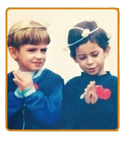
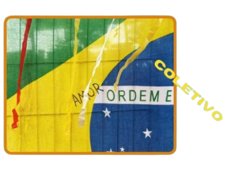
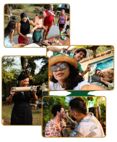

Festas
Carnaboia
Celebração que pulsa. Onde a música encontra corpos, e corpos encontram comunidade. Folia que transforma.
Bonito-MS | Arte, Ecoturismo e Inovação
Como as correntezas do Rio Formoso, o Coletivo Inspira flui conectando pessoas, arte, natureza e desenvolvimento. Um movimento que respira com Bonito e pulsa para transformar.
"O que você faz com seus amigos quando estão a toa? Nós criamos o COLETIVO INSPIRA! Depois de alguns anos na estrada da vida, nós - @predo.baga e @felipeatene - melhores amigos desde a infância, voltamos pra cidade onde crescemos e decidimos criar um novo movimento. Na finalidade de trazer arte, cultura, desenvolvimento, diversão e um novo estilo de vida pra Capital do Ecoturismo, fizemos o nosso primeiro evento em Bonito e foi um sucesso! Agora estamos ainda mais fortes e determinados a fazer a diferença nessa terra de águas cristalinas e pretendemos seguir fortes, como as correntezas do Rio Formoso, rumo ao desenvolvimento cultural de Bonito-MS."



Iniciativas que conectam festa, arte, sustentabilidade e território.
Exibindo: Todos
Festas
Celebração que pulsa. Onde a música encontra corpos, e corpos encontram comunidade. Folia que transforma.
Arte/Sustentabilidade
Soltar para ressignificar. Criatividade que cria novos ciclos — de objetos, ideias e relacionamentos.
Arte
Luz que revela. A lente que captura território, faces e memórias em movimento puro.
Festas | Carnaval BH
Folia que conecta. Identidade e redes criativas que dançam juntas na energia de Belo Horizonte.
Ainda não há projetos visíveis para essa categoria. Novidades em breve.
Talentos que formam a rede Inspira. Desenvolvedores, designers, criadores. Cada um com sua própria história publicada.